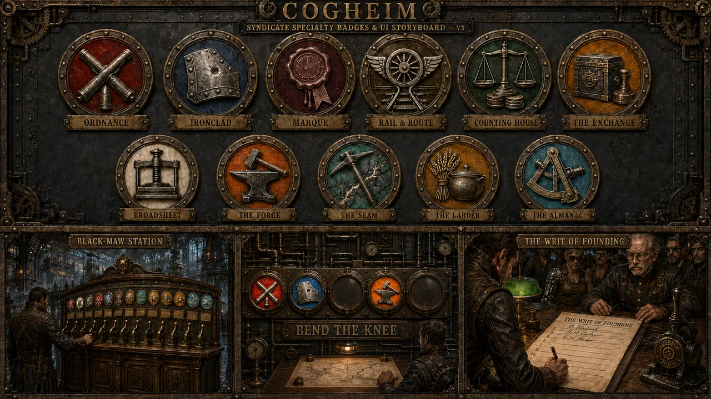
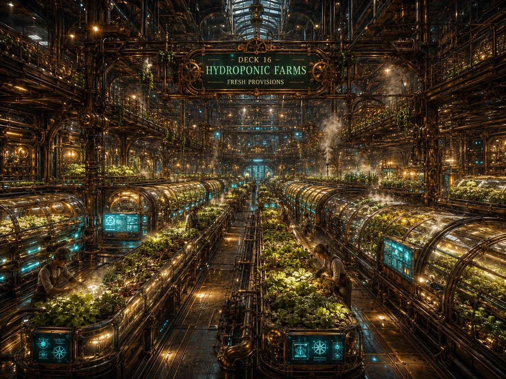

World of Cogheim / Syndicates
Society & Cooperation
A Syndicate isn't a guild that owns a base. The Strider itself is the community, the home, and the political body, all at once. Joining means physically boarding it.
Being upfront: everything on this page is real, founder-ruled design — not marketing copy. None of it is built, coded, or validated yet. Population and economy figures are design targets pending playtest data, not promises.
Founding one takes eleven co-signers, standing together at Black-Maw Station. A young Syndicate has thirty days to reach sixty members or it fails probation — with one grace extension, publicly visible, so a struggling crew fighting for its life is a story other players can actually respond to.
A Syndicate is defined by what it chooses to specialize in — three at founding, a fourth earned around day 30, a fifth around day 120. Once mastered, a specialty can't be casually swapped out — the system pushes toward mastering everything, not just chasing whatever's strongest this season.
Offense. The only specialty that makes a hull PvP-legal — fully opt-in on both sides.
Defense. Open to everyone, never PvP-legal on its own.
Politics, treaties, standing between Syndicates.
Transit, haulage, docking.
Finance, treasury, escrow.
Trade, markets, merchantry.
Reputation, recruitment, marketing.
Crafting, master crafters.
Extraction, mining, refining.
Food, farming, provisioning.
Exploration and scholarship.


Specialty research doesn't grant an invisible stat bump. It unlocks a physical module that actually appears on the hull. Master The Forge and craft halls appear on the decks. Master Ordnance and gun mounts bolt onto the arch. Master The Larder and greenhouses open where there weren't any before.
The consequence is the whole point: a player standing on a ridge can read a passing Strider's entire build just from its silhouette. Nothing needs a UI panel to tell you what a Syndicate has mastered — you can just look at it.
Founding happens here — at the Signatory Engine and the Registrar's counter, in a ceremony called the Writ of Founding. It's also the recruitment hub, the Muster Board where Syndicates post for new crew, and one of the only places safety is guaranteed regardless of who's holding Ordnance.
Black-Maw Station deserves its own full page — this is the short version.